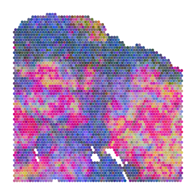
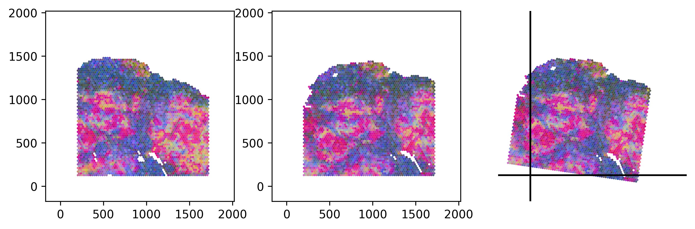
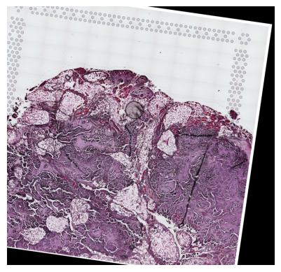
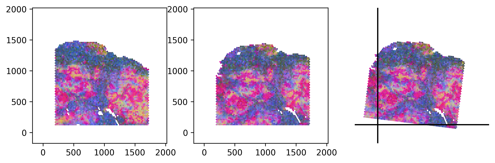
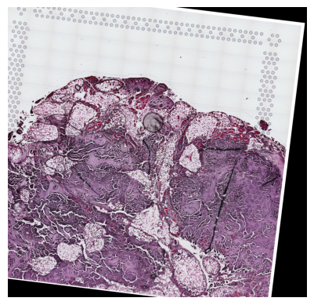
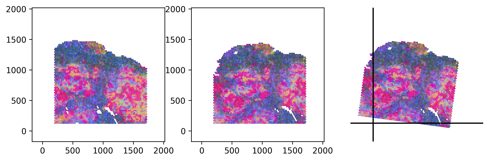

Loki Align - 2 ovarian carcinosarcoma samples
This notebook demonstrates how to run Loki Align on 2 adjunction sections of ovarian carcinosarcoma (OCS). It takes about 3 mins to run this notebook.
[1]:
import pandas as pd
import matplotlib.pyplot as plt
import os
from matplotlib.colors import rgb2hex
import loki.align
import loki.preprocess
import loki.utils
import loki.plot
/opt/anaconda3/envs/basic/lib/python3.9/site-packages/tqdm/auto.py:21: TqdmWarning: IProgress not found. Please update jupyter and ipywidgets. See https://ipywidgets.readthedocs.io/en/stable/user_install.html
from .autonotebook import tqdm as notebook_tqdm
/opt/anaconda3/envs/basic/lib/python3.9/site-packages/timm/models/layers/__init__.py:48: FutureWarning: Importing from timm.models.layers is deprecated, please import via timm.layers
warnings.warn(f"Importing from {__name__} is deprecated, please import via timm.layers", FutureWarning)
We first finetune OmiCLIP model on the target OCS sample.
[2]:
%%script echo "Comment this line to fine-tune the model on the OCS data."
import subprocess
import open_clip
model_name='coca_ViT-L-14'
pretrained_weight_path='path to the omiclip pretrained weight'
train_csv = 'visium_data/finetune_data.csv'
name = 'finetune_tnbc'
train_command = [
'python', '-m', 'training.main',
'--name', name,
'--save-frequency', '5',
'--zeroshot-frequency', '10',
'--report-to', 'wandb',
'--train-data', train_csv,
'--csv-img-key', 'img_path',
'--csv-caption-key', 'label',
'--warmup', '10',
'--batch-size', '64',
'--lr', '5e-6',
'--wd', '0.1',
'--epochs', '10',
'--workers', '16',
'--model', model_name,
'--csv-separator', ',',
'--pretrained', pretrained_weight_path,
'--lock-text-freeze-layer-norm',
'--lock-image-freeze-bn-stats',
'--coca-caption-loss-weight','0',
'--coca-contrastive-loss-weight','1',
'--val-frequency', '10',
'--aug-cfg', 'color_jitter=(0.32, 0.32, 0.32, 0.08)', 'color_jitter_prob=0.5', 'gray_scale_prob=0'
]
subprocess.run(train_command)
Comment this line to fine-tune the model on the OCS data.
We provide the embeddings generated from the OmiCLIP model. The sample data and embeddings are stored in the directory data/loki_align/two_osc_samples, which can be donwloaded from Google Drive link.
Here is a list of the files that are needed to run the cell type decomposition on the pseudo Visium data:
.
├── checkpoint_si
│ ├── 10X_Visium_gracia2021genome_HGSC_V19T26-103_C1_data_txt_features_finetune.csv
│ ├── 10X_Visium_gracia2021genome_HGSC_V19T26-103_D1_data_txt_features_zeroshot.csv
│ ├── 10X_Visium_gracia2021genome_HGSC_V19T26-103_D1_data_img_features_zeroshot.csv
│ ├── 10X_Visium_gracia2021genome_HGSC_V19T26-103_D1_data_img_features_finetune.csv
│ ├── 10X_Visium_gracia2021genome_HGSC_V19T26-103_C1_data_txt_features_finetune.csv
│ └── 10X_Visium_gracia2021genome_HGSC_V19T26-103_C1_data_txt_features_zeroshot.csv
└── visium_data
├── 10X_Visium_gracia2021genome_HGSC_V19T26-103_D1_data.h5ad
└── 10X_Visium_gracia2021genome_HGSC_V19T26-103_C1_data.h5ad
[3]:
data_dir = '../data/loki_align/two_osc_samples/'
[4]:
def get_features(sample_name, feature_type, case_name):
features_path=os.path.join(data_dir, 'checkpoint_ocs', sample_name+feature_type+case_name+'.csv')
features = pd.read_csv(features_path, index_col=0, header = None)
return features
[5]:
tar_sample_name = '10X_Visium_gracia2021genome_HGSC_V19T26-103_C1_data'
ad_path = os.path.join(data_dir, 'visium_data', tar_sample_name+'.h5ad')
ad_tar, ad_tar_coor, tar_img = loki.preprocess.prepare_data_for_alignment(ad_path)
[6]:
src_sample_name = '10X_Visium_gracia2021genome_HGSC_V19T26-103_D1_data'
ad_path = os.path.join(data_dir, 'visium_data', src_sample_name+'.h5ad')
ad_src, ad_src_coor, src_img = loki.preprocess.prepare_data_for_alignment(ad_path)
Loki Align ST to ST
Use Loki Align to align ST to ST.
[7]:
case_name = '_zeroshot'
feature_type = '_txt_features'
tar_features = get_features(tar_sample_name, feature_type, case_name)
src_features = get_features(src_sample_name, feature_type, case_name)
[8]:
pca_comb_features, pca_comb_features_batch = loki.utils.get_pca_by_fit(tar_features, src_features)
pca_comb_features[:,1] = -pca_comb_features[:,1]
pca_comb_features[:,2] = -pca_comb_features[:,2]
pca_rgb_comb = (pca_comb_features-pca_comb_features.min(axis=0))/(pca_comb_features.max(axis=0)-pca_comb_features.min(axis=0))
pca_rgb_comb[:,0] = pca_rgb_comb[:,0].max()-pca_rgb_comb[:,0]
pca_rgb_comb[:,2] = pca_rgb_comb[:,2].max()-pca_rgb_comb[:,2]
pca_rgb_comb[:,1] = pca_rgb_comb[:,1]*0.8
pca_hex_comb = [ rgb2hex(pca_rgb_comb[i,:]) for i in range(pca_rgb_comb.shape[0]) ]
[9]:
plt.figure(figsize=(4,4))
plt.scatter(ad_tar_coor[:,0], ad_tar_coor[:,1], marker='o', s=6, c=pca_hex_comb[:len(tar_features.T)])
plt.axis('off')
plt.show()

[10]:
cpd_coor, homo_coor, aligned_image = loki.align.align_tissue(ad_tar_coor, ad_src_coor, pca_comb_features, src_img)
[11]:
# loki.plot.plot_alignment_with_img(ad_tar_coor, ad_src_coor, homo_coor, tar_img, src_img, aligned_image, pca_hex_comb, tar_features)
[12]:
loki.plot.plot_alignment(ad_tar_coor, ad_src_coor, homo_coor, pca_hex_comb, tar_features)

[13]:
plt.imshow(aligned_image, origin='lower')
plt.axis('off')
plt.show()

Loki Align image to ST
Zero-shot image to ST alignment
Use zero-shot Loki Align to align image to ST.
[14]:
case_name = '_zeroshot'
tar_features = get_features(tar_sample_name, '_txt_features', case_name)
src_features = get_features(src_sample_name, '_img_features', case_name)
[15]:
pca_comb_features, pca_comb_features_batch = loki.utils.get_pca_by_fit(tar_features, src_features)
[16]:
cpd_coor, homo_coor, aligned_image = loki.align.align_tissue(ad_tar_coor, ad_src_coor, pca_comb_features, src_img)
[17]:
# loki.plot.plot_alignment_with_img(ad_tar_coor, ad_src_coor, homo_coor, tar_img, src_img, aligned_image, pca_hex_comb, tar_features)
[18]:
loki.plot.plot_alignment(ad_tar_coor, ad_src_coor, homo_coor, pca_hex_comb, tar_features)

[19]:
plt.imshow(aligned_image, origin='lower')
plt.axis('off')
plt.show()

Fintuned image to ST alignment
Use Loki Align to align image to ST with finetuning.
[20]:
case_name = '_finetune'
tar_features = get_features(tar_sample_name, '_txt_features', case_name)
src_features = get_features(src_sample_name, '_img_features', case_name)
[21]:
pca_comb_features, pca_comb_features_batch = loki.utils.get_pca_by_fit(tar_features, src_features)
[22]:
cpd_coor, homo_coor, aligned_image = loki.align.align_tissue(ad_tar_coor, ad_src_coor, pca_comb_features, src_img)
[23]:
# loki.plot.plot_alignment_with_img(ad_tar_coor, ad_src_coor, homo_coor, tar_img, src_img, aligned_image, pca_hex_comb, tar_features)
[24]:
loki.plot.plot_alignment(ad_tar_coor, ad_src_coor, homo_coor, pca_hex_comb, tar_features)

[25]:
plt.imshow(aligned_image, origin='lower')
plt.axis('off')
plt.show()
[ ]: